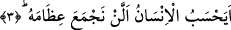

Aynu’l-maâni isimli eserde ifâde olunduğuna göre herhangi bir şeyin üzerine yemin
etmek, o şeyin büyüklüğüne ya da ondaki yaratılış inceliğine ve nimetin azametine
dikkat çekmek içindir. Her iki âyette kasemin tekrar edilmesinin sebebi, üzerine yemin
edilen olgulardan her birinin yemin için gâye olduğuna ve başlı başına bir yemin hedefi
bulunduğuna dikkat çekmek içindir. Çünkü bu iki âyette üzerine yemin edilen her olgu
böylesi özel bir amacı gerektirecek üstünlükte, nitelikte bir olgudur.
Âyette yer alan ve “kınayan” şeklinde tercüme edilen “levvâme” kelimesinin kökü
“levm”dir. Levm insanın meydana gelen kusurlarından dolayı kendini kınaması,
demektir. “Nefs-i levvâme”den maksad, nefs-i emmâre ile mutmainne arası mertebede
yer alan nefis demektir. Nefs-i levvâme’nin iki yönü vardır:
Nefs-i levvâme bir yönüyle nefs-i emmâreye bakar. Bu “vechu’l-İslâm/İslâm’ın yüzü”
tarafıdır. Eğer nefs-i emmâreye bu açıdan bakacak olursan İslâma uymayı terkettiği,
muhâlefete devam ettiği için bu nefsi kınarsın. Yine nefsi geçmiş günlerde amelleri
itâatları elden kaçırdığı ve yapmadığı için, zulmânî ve hayvânî otlaklarda otladığı için
kınarsın.
Nefs-i levvame’nin bir de nefs-i mutmainne’ye bakan yönü vardır. İşte bu yön
vechü’l-îman/îman yönüdür. Bu açıdan mutmainne’ye baktığında onun nûru ile
nurlanırsın, boyasıyla boyanırsın ve yine o nefsi kendisinden meydana gelen kusurlardan
dolayı ve üzerindeki mahzurlar sebebiyle kınarsın. İşte bu nefis “itmi’nan” makamına
kavuşuncaya kadar kendi kendini kınamaya ve bu kınamasını kendi üzerine yöneltmeye
devam eder. Bu nedenle sözünü ettiğimiz nefis Allah’ın üzerine kasem etmesini hak
etmiş bir nefistir. Allah Teâlâ o nefsin üzerine yemin ederek öldükten sonra dirilme
mahşere gelme ve yeniden canlanmayı pekiştirmiş oluyor.
Kâşânî der ki: Allah Teâlâ bu âyette kıyâmet ile nefs-i levvâme’yi, üzerlerine yemîn
etmek sûretiyle bir arada zikrediyor. Böylece Allah nefs-i levvâme ile kıyâmetin şânını
yüceltmiş ve aralarında bir uyum olduğunu vurgulamış oluyor. Çünkü nefs-i levvâme
kıyâmeti tasdik eden, vuku bulacağını kabul eden ve onun için hazırlık yapan nefistir.
Çünkü bu nefis kusurlu kaldığı, hayırları işlemekten geri durduğu için sonsuza dek
kendini kınayan nefistir. Böyle bir nefis iyi ameller yapsa bile hayırda daha fazla
yapmaya düşkün olduğu ve iyi amelleri yapmayı çok istediği için bunlardan geri kaldı
diye kendini kınar. Çünkü bu nefis yaptıklarının karşılığını alacağına inanmaktadır.
Hayırdan geri kaldı, diye kendini kınayan nefis hata eder de bâzı fırsatları kaçırır ve
gaflete ve nisyana düşerse o zaman kendini ne kadar kınar varın siz hesab edin.
Âyette yer alan kasemin cevabı mahzûftur. Bu cevabın ne olduğunu bundan sonra gelen
üçüncü âyet-i kerîme bize işâret etmektedir.